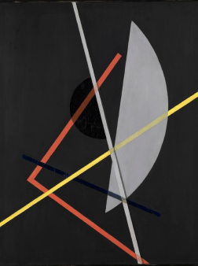
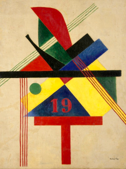

Роботи Ласло Мохой-Надя, які надихали Пола Ренда



1914–1996
Його справжнє ім'я — Перетц Розенбаум. Пізніше він змінив його на більш «зручне» Пол Ренд. У той час він уже займався графічним дизайном, і його друг і колега Морріс Візгрод пожартував: «Чотири літери в імені, чотири в прізвища, з цього вийде хороший логотип». Інтерес до дизайну він виявляв ще в юному віці. Він оформляв шкільні свята і навіть малював вивіску для продуктового магазину свого батька. Однак батько сумнівався, що малюванням можна заробляти на життя, тому молодій людині довелося вчитися в Harren High School в Манхеттені. Але Пол не відступив від свого покликання і паралельно відвідував вечірні курси дизайну і мистецтва в інституті Pratt
Щоправда в навчанні він не виявляв особливого старанності і більшою мірою навчався всьому самостійно. Велике значення в становленні його як дизайнера надали роботи Адольфа Жан-Марі Мурон і Ласло Мохой-Надя, які публікувалися в таких європейських журналах, як Gebrauchsgraphik.
Роботи Ласло Мохой-Надя, які надихали Пола Ренда
Art is an idea that has found its perfect form.

Lucian Bernhard, плакат для Берлінської сірникової компанії Priester. З цього постера почалося напрямок Sachplakat.
Як і у будь-якого початківця графічного дизайнера, початок кар'єри Пола Ренда не мало нічого особливо видатного. Більшість робіт того часу - це замовні ілюстрації для газет і журналів на різні теми. Однак він не переставав займатися власним розвитком.
Особливо його зацікавив бурхливо розвивається в Європі стиль Sachplakat (або предметний постер). Цей стиль з'явився в Німеччині в результаті масового розвитку комерційної реклами. Рекламні плакати характеризувалися граничною лаконічністю, максимальної виразністю і низькою вартістю виготовлення. Їх можна було друкувати великими тиражами навіть починаючим підприємцям, крім того, своєю прямотою вони виділялися на тлі вишуканих рекламних плакатів того часу.
Пол Ренд стає прихильником зароджувалася в 50-х швейцарської («хельветічной») школи дизайну (Swiss style), ставить на чільне місце лаконічність, чистоту і приділяє особливу увагу типографике.
Перше серйозне визнання Пол Ренд отримав в період роботи в журналах Apparel Arts, Esquire-Coronet, Directions. Там він пройшов шлях від дизайнера обкладинок до арт-директора.
Пол Ренд,Постер клубу арт-директорів, 1992 рік
Пропрацювавши багато років у рекламі, Пол вміло поєднував творчий політ з вирішенням поставленого завдання. Вважається, що саме він переконав бізнес в тому, що дизайн - це інструмент для розвитку бізнесу, а не просто красиве оформлення. Ренд був прихильником мінімалістичні графічних рішень. Він стверджував, що першорядну роль відіграє виразна ідея.
Simplicity is not the goal. It is the by-product of a good idea and modest expectations
У 1956 році компанія IBM звернулася до Пола за створенням свого логотипу, і не прогадала, адже роботою вони залишилися задоволені.
Але Ренд все одно був незадоволений своїм логотипом. Знадобляться роки перш, ніж одержимий деталями дизайнер зрозуміє, як це виправити. Дизайн логотипу IBM був переглянутий і оновлений Ренд в 1972 році зі знаменитим малюнком у вигляді смуг, який залишається незмінним до наших днів.
Упакування IBM
Знаменитий ребус до логотипа IBM,
створений Полом Рендом
Коли Стів Джобс заснував свою компанію «NeXT» в 1985 році після відходу з Apple, за розробкою нового бренду він звернувся саме до Ренда.
Цікава історія початку цього співробітництва. Коли Стів попросив його розробити кілька варіантів і показати йому, Пол відповів: «Ні. Я вирішую вашу задачу, і ви мені платите за це гроші. Якщо вам потрібні варіанти - зверніться до іншої людини». Пол Ренд завжди мав складний характер і свою точку зору на речі. Стів прийняв цю пропозицію. В кінцевому підсумку був створений унікальний образ торгової марки, за який Пол Ренд отримав $100 000.
Айдентика бренда NeXT, створена Полом Рендом
Проект створено в рамках навчальної дисципліни «Веб-технології» на кафедрі графічного дизайну ЛНАМ